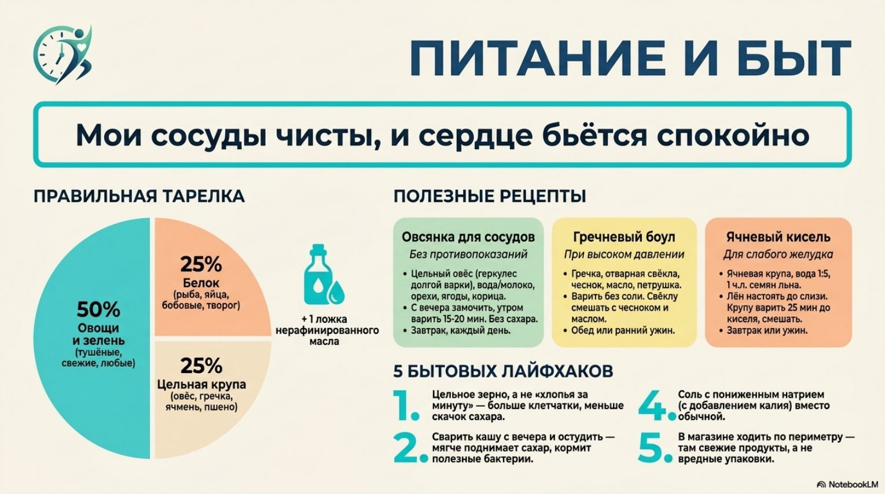
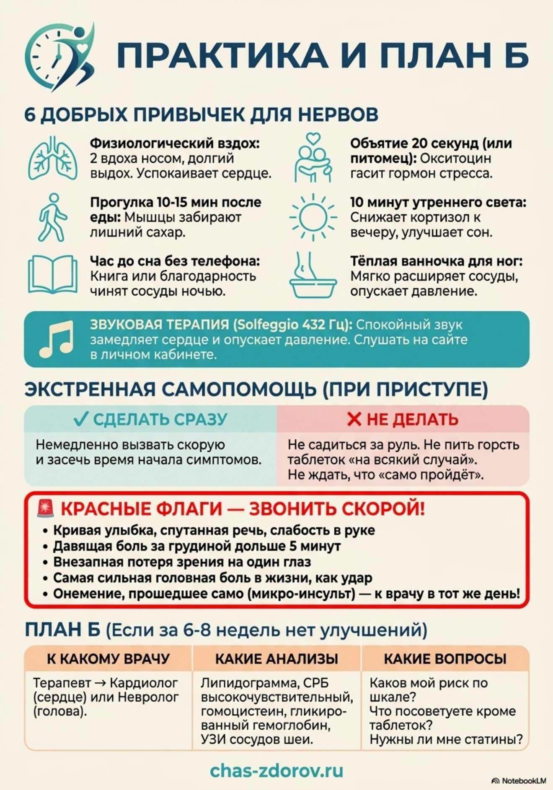

Каши для сосудов
Правильная тарелка и три рецепта каши для сердца и сосудов
Распечатайте карточку и повесьте на холодильник — так проще не забывать о главном каждый день.


Новые выпуски и карточки — первыми в нашем Telegram-канале.
Открыть Telegram